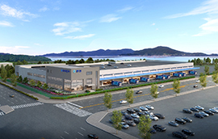

-
 ㈜한진, 인천항에 삼성전자로지텍 맞춤형 인천물류센터 구축...핵...
㈜한진, 인천항에 삼성전자로지텍 맞춤형 인천물류센터 구축...핵심 고객사와 물류 파트너십 확대⊙ 인천항 유휴부지에 삼성전자로지텍 인천물류센터 구축...‘24년 3월 운영 개시⊙연면적 약 20,000㎡(6,000평)에 지상 3층 규모의 창고동과 폐가전 집하장으로 구축⊙물류센터 신축 기반으로 가전 운송 수행구간 확대 및 수출입 컨테이너 운송 참여㈜한진이 인천항 부근에 보유한 약 1만 평의 자가부지에 BTS방식(Build To Suit)의 삼성전자로지텍 인천물류센터를 구축한다.이를 위해 지난 ‘90년부터 해당 부지에서 운영해온 한진 국제 CFS(Container Freight Station)의 역할을 지난해 10월 개장한 인천신항 IGDC(Incheon Global Distribution Center, 인천글로벌물류센터) 및 인천 내 타 작업장으로 이관하였고, 지난 2월 철거를 완료하였다.3월부터 착공을 시작한 삼성전자로지텍 신축 인천물류센터는 약 40,000㎡ 부지에(12,000평) 약 연면적 20,000㎡(6,000평)의 지상 3층 규모의 창고/사무동을 비롯해 폐가전 집하장을 12월까지 구축하여 ‘24년 3월부터 본격적인 운영에 들어갈 계획이다.해당 물류센터는 경인고속도로와 수도권순환고속도로가 근접해있어 서울 및 수도권과의 접근성이 용이하다. 또한, 화물차 75대가 동시에 상·하차 작업을 할 수 있고, 폐가전 집하장을 폐가전 보관 및 회수하는 물류 거점으로도 활용할 계획이다.㈜한진은 삼성전자로지텍의 국내 판매 가전의 운송과 수출입 컨테이너 운송에 참여해 왔으며 이번 물류센터 신축을 기반으로 삼성전자로지텍과의 물류 파트너십이 더 확대될 것으로 기대하고 있다.기존 일부 수도권과 지방권역 간 운송 수행구간에서 신규 구간이 추가되어 수행 규모가 확대되었으며, ㈜한진이 보유한 인천컨테이너터미널(HJIT), 평택컨테이너터미널(PCTC) 등과 연계한 국내 판매 및 해외 수출용 가전의 수출입 컨테이너 운송 역시 국내 운송과 유사한 규모의 수준으로 참여한다.앞으로도 보관 하역 기능을 더욱 고도화하는 것은 물론, 국내에서는 운송 구간 확대를 비롯해 전국 물류센터를 대상으로 물류 운영 범위를 더욱 확대하여 수행 업무 간 시너지를 낼 수 있도록 제안하고, 해외에서는 해외 수출용 가전 대상으로 운송에 참여하는 등 글로벌 물류 부문에도 신규로 참여할 계획이다.㈜한진 관계자는 “삼성전자로지텍 신축 인천물류센터를 비롯해 우리회사가 보유한 물류 인프라를 통해 고객사에 선진화된 물류 서비스를 제공하고, 국내외에서 다양한 산업군별 맞춤형 물류 전문성을 확보하여 경쟁력을 강화하겠다”고 말했다.
2023-03-27보도자료 ㈜한진
-
한진부산컨테이너터미널㈜, 국내 항만사 최초로 스마트 안전관제 시...
한진부산컨테이너터미널㈜, 국내 항만사 최초로스마트 안전관제 시스템 ‘HAN눈에’ 구축⊙ 24일, 부산항운노동조합와 함께 구축한 HJNC 스마트 안전관제 시스템 시연회 및현업 적용⊙작업자용 스마트 안전 솔루션, 운영 장비 안전 솔루션, 디지털 트윈기반 통합 관제시스템으로 구성하여 현장 모든곳의 작업환경의 위험요소를 실시간으로 감지한진부산컨테이너터미널㈜(이하 ‘HJNC’)이 부산항운노동조합과 함께 국내 항만사 중 최초로 스마트 안전관제 시스템을 구축했다.HJNC는 지난해 5월, 항만 내 안전사고를 예방하고 안전한 작업환경을 조성하기 위해 부산항운노동조합과 스마트 안전관제 시스템 구축을 위한 업무협약을 체결하였고, 24일 ㈜한진 노삼석 대표이사 사장, ㈜한진 조현민 미래성장전략 및 마케팅 총괄 사장, HJNC 김규경 대표이사, 부산항운노동조합 박병근 위원장 등 주요 관계자가 참석한 가운데 HJNC 관제센터에서 시연회를 가졌다.24일부터 본격적으로 현업에 적용되는 스마트 안전관제 시스템은 HJNC 사내 공모를 통해 안전을 최우선 가치로 현장 모든 곳의 작업환경의 위험요소를 실시간으로 한눈에 감지하여 안전사고를 예방하겠다는 의지가 담긴 ‘HAN눈에’라는 네이밍으로 확정되었다.HJNC 스마트 안전관제 시스템 ‘HAN눈에’는 ▲작업자용 스마트 안전 솔루션, ▲운영 장비 안전 솔루션, ▲디지털 트윈기반 통합 관제 시스템으로 구성되었다.작업자용 스마트 안전 솔루션은 작업자가 손목에 착용한 스마트 밴드가 작업자의 위치, 건강상태, 작업환경을 모니터링 센터로 실시간 전달하여 안전위해요소를 사전에 제거할 수 있다. 또한, 선박 작업 사항(Stowage Plan)을 확인할 수 있는 자체 개발한 앱(App)이 탑재된 LTE 무전기를 활용하여 실시간 작업 상황 공유와 페이퍼리스(Paperless) 환경 구축 등으로 업무 편의성을 높여 작업자가 안전에 더욱 집중할 수 있게 되었다.운영 장비 안전 솔루션은 작업장 내 운영 장비의 위치, 작동상태 등을 실시간으로 모니터링하여 운전자 졸음방지, 충돌방지, 적정 높이를 초과하는 컨테이너의 반입금지 등을 경고한다. 특히, 사람과 장비간에 일정 간격 이내로 좁혀지면 경고음 발생 및 장비 작동 강제 정지 기능으로 사고를 예방한다.디지털 트윈기반 통합 관제 시스템은 현장의 실제 운영상황을 관제센터에도 동시에 구현함으로써 실시간으로 발견되는 위험요소를 현장 작업자에게 즉시 전달하여 안전사고를 예방한다.HJNC 관계자는 “부산항은 세계 2위의 환적중심항만으로서 스마트 해운항만물류시스템 구축을 통해 생산성과 안전관리 역량을 높이고 있다. 이번 시스템 구축으로 우리회사 역시 부산항운노동조합과 함께 항만 종사자의 안전을 최우선으로 협력하여 부산항의 경쟁력을 높이는데 일조하겠다”고 말했다.
2023-03-27보도자료 ㈜한진
-
대한항공, 튀르키예 지진 피해 구호물자 수송 위한 화물 전세기 ...
대한항공, 튀르키예 지진 피해구호물자 수송 위한 화물 전세기 운항⊙ 3월 20일(월) 튀르키예 지진 피해지역 구호물자 무상 수송 위한 화물 전세기 운항⊙ 글로벌 항공사로서 사회적 책임을 다하기 위해 재해지역 구호물자 수송에 적극 참여대한항공이 강진으로 큰 피해를 입은 튀르키예 이재민들을 위해 구호물자 무상 수송에 나섰다.대한항공은 3월 20일(월) 새벽 0시 25분 출발하는 인천발 이스탄불행 화물기를 편성해, 튀르키예 지진 피해 구호물자를 무상 수송했다고 밝혔다. 기종은 보잉777F 화물기다.대한항공이 수송한 구호물자는 텐트, 침낭, 담요 등 약 45톤 규모다. 이스탄불에 도착한 구호물자는 튀르키예 재난위기관리청(AFAD)을 통해 지진 피해를 입은 이재민들에게 전달될 예정이다.이번 화물 특별 전세기 운항은 국토교통부와 한국국제협력단(KOICA)의 인도적 지원 요청에 대한항공이 화답하면서 이뤄졌다.대한항공 관계자는 "튀르키예 이재민들을 돕기 위한 한국국제협력단의 인도적 구호활동에 조금이나마 도움이 되기 위해 이번 수송을 결정했다"며 "아직까지도 지진피해로 고통받고 있는 튀르키예 이재민들에게 이번 구호물자가 재난의 아픔을 조속히 이겨내는데 도움이 되기를 희망한다"고 밝혔다.한편, 대한항공은 세계 최고 수준의 항공화물 운송 노하우와 글로벌 네트워크를 토대로 지난 2018년 라오스 댐사고, 2017년 페루 홍수, 2016년 피지 사이클론, 2015년 네팔 지진 등 재난 현장에 구호품 지원과 구호물품 무상 수송을 한 바 있다. 앞으로도 대한항공은 해외 긴급 구호활동에 글로벌 항공사로서 선도적 역할을 수행하는 한편, 향후 인도주의 활동에 적극 참여할 계획이다.(끝)
2023-03-27보도자료 ㈜한진
-
대한항공, 델타항공과 조인트벤처 5주년 앞두고 필리핀서 주택 수...
대한항공, 델타항공과 조인트벤처 5주년 앞두고필리핀서 주택 수리 봉사활동 ‘구슬땀’⊙ 대한항공, 델타항공과 3월 17일 필리핀 칼라우안에서 주거 취약 계층 주택을 수리하는 봉사활동 진행⊙ 지역 사회와 따뜻한 동행을 하는 대한항공 글로벌 사회공헌 활동의 일환으로 2013년 이후 꾸준히 실시 중⊙ 2018년 양사 조인트벤처 체결, 올해 5주년 앞둬 … 미국 로스앤젤레스 집 짓기 봉사, 중국 및 몽골 식림 행사 등 여러 활동 함께 해대한항공은 2023년 3월 17일 필리핀 칼라우안(Calauan)에서 델타항공 직원들과 함께 거주 시설이 열악한 이웃들에게 보금자리를 마련해주는 주택 보수 봉사활동을 펼쳤다.대한항공의 이같은 봉사활동은 지역 사회와 따뜻한 동행을 해나가는 글로벌 사회공헌 활동의 일환으로, 2013년 10월 마닐라 케손 지역을 시작으로 꾸준히 지속되고 있다. 이번 행사는 집 없는 사람들에게 거주 시설을 제공하는 현지 비영리기관 ‘해비타트 포 휴매니티 필리핀’(Habitat for Humanity Philippines)과 조인트벤처 체결 이후 대한항공과 공동 협력 관계를 이어가고 있는 델타항공이 참여했다.필리핀 라구나(Laguna) 주의 칼라우안은 2009년 태풍 온도이의 피해를 입어 주거지를 잃은 저소득 가정을 위한 650여 가구의 재정착촌이 있는 곳이다. 아직 110여 가구가 열악한 주거환경 탓에 입주를 하지 못한 채 도움의 손길을 기다리고 있다.이날 대한항공과 델타항공의 직원들은 주택 보수 작업을 진행하는 현장에 직접 참여해 건축 자재 운반, 주택 외벽의 페인트 작업, 목공 작업과 창호 수리 등의 봉사활동을 벌이며 구슬땀을 흘렸다.대한항공 이철 필리핀 지점장은 “대한항공은 2013년부터 해비타트와 협력해왔고, 특히 이번 행사에는 조인트벤처 설립 5주년을 맞아 처음으로 델타항공의 직원들과 함께 참여하게 되어 감회가 새롭다”고 말했다.이어 “필리핀은 동남아시아에서 매우 중요한 시장 중 하나이며, 대한항공은 델타항공과의 조인트 벤처 파트너십을 통해 비즈니스에서 나아가 우리가 일하고 있는 지역 사회에 환원하고자 한다”고 밝혔다.델타항공의 요코사와 아키노리 (Yokosawa Akinori) 동남아 세일즈 담당 매니저 역시 “델타항공과 대한항공은 조인트 벤처 파트너십을 통해 공동 운항이나 편리한 환승 등의 서비스 제공 뿐 아니라 임직원의 사회공헌에도 힘쓰고 있다. 필리핀에서 최초로 양사가 함께 사회공헌 활동을 진행하게 되어 큰 보람을 느낀다”고 말했다.한편 대한항공은 델타항공과 2018년 조인트 벤처 협약을 체결한 후 미국 로스앤젤레스에서 ‘사랑의 집 짓기’ 봉사활동, 중국 쿠부치 및 몽골 바가노르 인근 사막에서 현지 사막화 방지에 앞장서는 나무심기 행사 등 글로벌 항공사의 위상에 걸맞는 공동의 사회공헌 활동을 이어나가고 있다.
2023-03-27보도자료 ㈜한진
-
㈜한진, ‘디지털 이지오더’로 소상공인 온라인 진출 지원...&...
㈜한진, ‘디지털 이지오더’로 소상공인 온라인 진출 지원...‘동네가게에서 전국구로’⊙온라인 환경에 익숙하지 않은 소상공인에게 ‘디지털이지오더’로 온라인 판로 개척 지원⊙주문, 결제, 배송에서 디지털 명함 등 고객관리까지 원스톱 디지털 앱(App) 플랫폼⊙소상공인이 골목상권에서 전국구 판로를 개척 할 수 있는 동반성장의 대표 모델로 육성㈜한진이 소상공인 온라인 판매지원 플랫폼 앱(App)인 ‘디지털 이지오더’ 통해 지역 소상공인의 온라인 진출 지원에 앞장서고 있다.내수 위축과 물가 상승 등으로 어려움을 겪고 있는 소상공인에게도 코로나19로 비대면 소비 트렌드가 정착하면서 온라인 판로 개척의 중요성이 커지고 있다. 하지만 오프라인 사업에 익숙한 소상공인들은 온라인 판매에 어려움을 겪거나 온라인 환경에 익숙하지 않아 대부분 전화 주문으로 상품을 판매하고 있어 주문량을 처리하는데 한계가 있고 지속적인 고객관리도 어려워 마케팅 활동에 제약이 있다.㈜한진은 ‘21년 12월 출시한 디지털 이지오더를 통해 이러한 어려움을 겪고 있는 소상공인의 비대면 판로 개척 지원에 나서고 있다. 디지털 이지오더는 상품 등록부터 주문, 결제, 배송까지 한번에 관리할 수 있는 원스톱 디지털 앱 플랫폼으로 소상공인의 수기 관리의 번거로움을 없애고 디지털 업무 편의성을 제공하는 것은 물론, 가입비, 주문 수수료, 광고비를 없애 판매자의 부담을 덜어주었고 고객관리 외 홍보, 마케팅 등 더 수월하게 매장 관리를 할 수 있도록 지원하고 있다.특히 판매자가 단골 고객에게 카카오톡이나 문자로 디지털 명함을 보낼 수 있고, 봄철 나물 등 제철 상품 및 신상품이 입고되면 카카오톡, 문자, APP 알림톡으로 상시 홍보를 할 수 있어 고객관리에 효율적이다. 또한, 매장을 방문하는 고객은 가게 전용 QR코드를 스캔하여 매장과 상품 정보를 확인 후, 편리하게 상품을 구매하여 집으로 배송받을 수 있다.디지털 이지오더는 ㈜한진의 택배 서비스 중 하나인 원클릭 택배 서비스와도 자동으로 연동하여 사용할 수 있다. 지난 19년 10월 공유가치창출(CSV)의 일환으로 런칭한 '원클릭 택배서비스'는 소상공인, 1인 판매자, 스타트업 등을 위한 택배서비스로 하루 1~10건 정도의 소규모 발송 고객이 합리적인 가격과 간편한 기능으로 택배를 이용할 수 있는 서비스로 서비스 출시 3년만에 가입 고객사 5만개 사에 이르는 등 큰 호응을 얻고 있다.㈜한진은 현재 디지털 이지오더 서비스 이용에 필요한 회원 가입, PG 서비스 신청, QR코드 생성, 배송/환불/상품 관리 등의 기능을 소상공인이 이해하기 쉽도록 셀러 교육 영상도 제작하였으며, 향후 디지털 이지오더에 등록한 셀러를 지역별로 DB화하여 전국의 맛집 위치와 다양한 정보를 한눈에 볼 수 있도록 하여 소상공인의 판로 확대와 고객에게 다양한 지역의 고품질 상품을 합리적인 가격에 제공한다는 계획이다.㈜한진 관계자는 “‘디지털 이지오더’가 지역 소상공인분들이 골목상권에서 전국구를 대상으로 활발히 진출 할 수 있도록 사업 성장을 지원하는 동반성장의 대표 모델로 자리매김할 수 있도록 성장시켜 나갈 것”이라고 전했다.
2023-03-27보도자료 ㈜한진